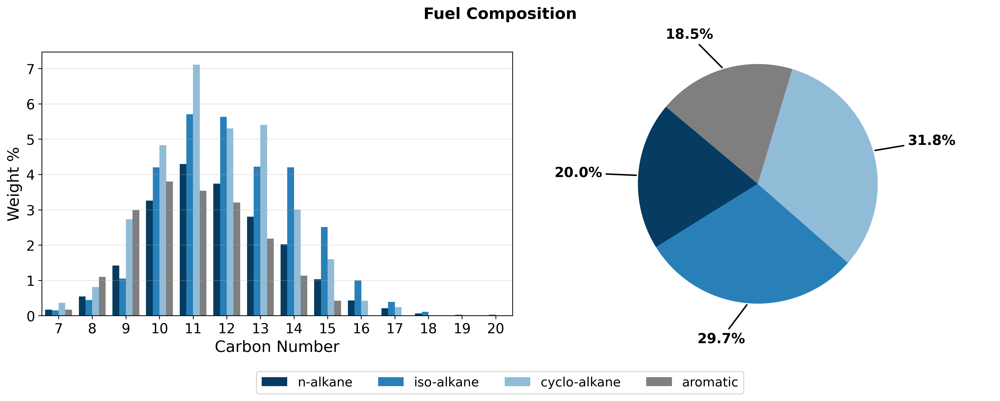
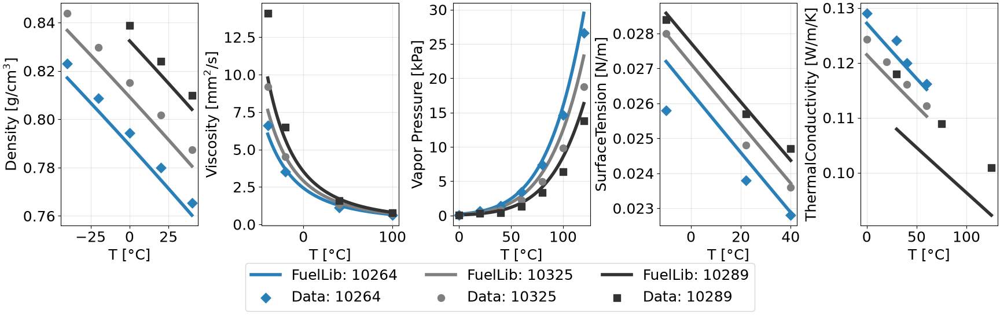

Command-Line Interface (CLI) Tools
FuelLib provides the fl command-line tool for plotting, unit conversion, simulating, and exporting fuel data.
The commands are organized into groups:
fl
├── decomp Decompose molecular structures into group-contribution groups
├── export converge, pele
├── list fuels
├── plot comp, props
├── simulate distillation
├── convert c2k, k2c, c2f, f2c, f2k, k2f, eps2k
└── dev format, test, build-docs, clean-docs, view-docs
For detailed usage of each command, use the --help or -h flag (e.g., fl --help, fl plot --help, or fl plot comp --help).
Plotting
The plotting CLI provides quick visualization of fuel composition and properties. The following commands are available:
fl plot comp -f FUEL_NAME [OPTIONS] # Plot composition
fl plot props -f FUEL_NAME [OPTIONS] # Plot properties vs temperature
If experimental data is available for the fuel in properties_data/{fuel_name}.csv, it will be included in the plots for comparison with GCM predictions.
To use different property correlations, use the Python API.
Examples:
fl plot comp -f posf10325
fl plot props -f posf10264 posf10325 posf10289
fl plot props -f my-fuel --fuel-data-dir custom_fuels -p Density Viscosity
fl plot props -f my-fuel --fuel-data-dir custom_fuels --leg-labels "My Fuel"
Use --leg-labels to supply a literal legend label for each fuel, in the same
order as --fuel-names. Quote labels containing spaces, for example
--leg-labels "Fuel 1" "Fuel 2". Without this option, FuelLib retains its
existing automatic legend formatting.
The first two commands provide the following plots for the specified fuels, while the third command plots only the density and viscosity of a custom fuel:


Fig. 2 Compositional information of Jet A (POSF10325).


Fig. 3 Properties of conventional jet fuels JP-8 (POSF10264), Jet A (POSF10325), and JP-5 (POSF10289) against data from the Air Force Research Laboratory[1]. Note that the data sets for thermal conductivity are very inconsistent, but they typically show linear decreases in thermal conductivity with temperature.
Unit Conversion Tools
Temperature Conversion
fl convert c2k 25 # Celsius to Kelvin
fl convert k2c 298.15 # Kelvin to Celsius
fl convert c2f 25 # Celsius to Fahrenheit
fl convert f2c 77 # Fahrenheit to Celsius
fl convert f2k 77 # Fahrenheit to Kelvin
fl convert k2f 298.15 # Kelvin to Fahrenheit
Lennard-Jones Parameters
Convert Lennard-Jones well depth from J/mol to characteristic temperature in Kelvin (for CHEMKIN chemical mechanisms):
fl convert eps2k 1000 # epsilon (J/mol) to characteristic temperature (K)
Fuel Management
Quick listing of available fuels:
fl list fuels # List fuels shipped with FuelLib
fl list fuels --fuel-data-dir custom_fuels # List custom fuels
SMILES Decomposition
Decompose SMILES strings into the Constantinou-Gani groups used in
ref_gani.csv (default), the Nannoolal groups used in
ref_nannoolal.csv, or the UNIFAC subgroups used in ref_unifac.csv:
# Note that SMILES strings with branching or complex structures must be quoted to avoid interpretation issues.
fl decompose -s CCc1ccccc1 "CC(C)CCCCC" -n ethylbenzene 2-methylheptane
fl decompose -i compounds.csv -o decomposition.csv
fl decompose -s CCc1ccccc1 -n ethylbenzene -m nannoolal
fl decompose -s CCc1ccccc1 -n ethylbenzene -m unifac
Options:
-s/--smiles: one or more SMILES strings to decompose.-n/--name: optionalReference Compoundnames, exactly one for each SMILES string given with--smiles.-i/--input: CSV file with aSMILEScolumn and an optionalReference Compoundcolumn.-m/--method: group-contribution method,gani(default),nannoolal, orunifac(case-insensitive).-o/--out: CSV file for the counts. Without it, the nonzero group counts are printed.
Warning
Verify the decompositions before use. A known shortcoming of the gani
method is indene, where the non-aromatic C=C bond is categorized as a
CH group.
Simulations
Simulate a fuel test for one or more fuels and plot the results. Multiple fuels are
overlaid on the same plot with a legend. If properties_data/{fuel_name}.csv has
measured data for the simulated test (Distillation rows for
d86_greenfield), it is plotted as symbols in the color of the fuel’s curve:
fl simulate distillation -f heptane_decane # Show the plot
fl simulate distillation -f heptane_decane -o d86.png # Export the plot
fl simulate distillation -f posf10264 posf10325 posf10289 # Compare fuels
fl simulate distillation -f my-fuel -dir custom_fuels --no-use-ref-props
Options:
--model: distillation curve model.greenfield(default) is the ASTM D86 distillation curve model of Greenfield et al. (see Distillation).-f/--fuel_names: name(s) of the fuel(s), space-separated (required).-dir/--fuel_data_dir: directory where fuel data files are located (default:fuellib/data). Applies to all fuels.-r/--use-ref-props,--no-use-ref-props: whether to use reference compound properties (default: use them).-o/--output: file to export the plot to. Without it, the plot is shown.
Export for CFD
FuelLib provides exporters for generating fuel property files for use in CFD simulations. The following commands are available:
fl export pele -f FUEL_NAME [OPTIONS] # PelePhysics
fl export converge -f FUEL_NAME [OPTIONS] # CONVERGE
Additional information and examples for using the exporters can be found in the Exporting Properties for Pele and Exporting Properties for CONVERGE tutorials.
Developer Tools
Tools for development and documentation maintenance:
fl dev format # Format, lint, and type-check Python code (ruff format, ruff check --fix, ty check)
fl dev test # Run the test suite (extra arguments are passed to pytest)
fl dev build-docs # Build Sphinx documentation
fl dev clean-docs # Clean generated documentation
fl dev view-docs # Open the built documentation in a browser